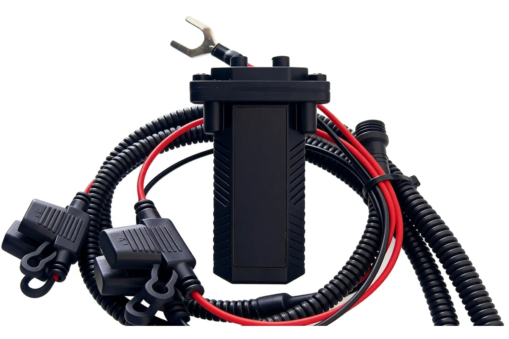
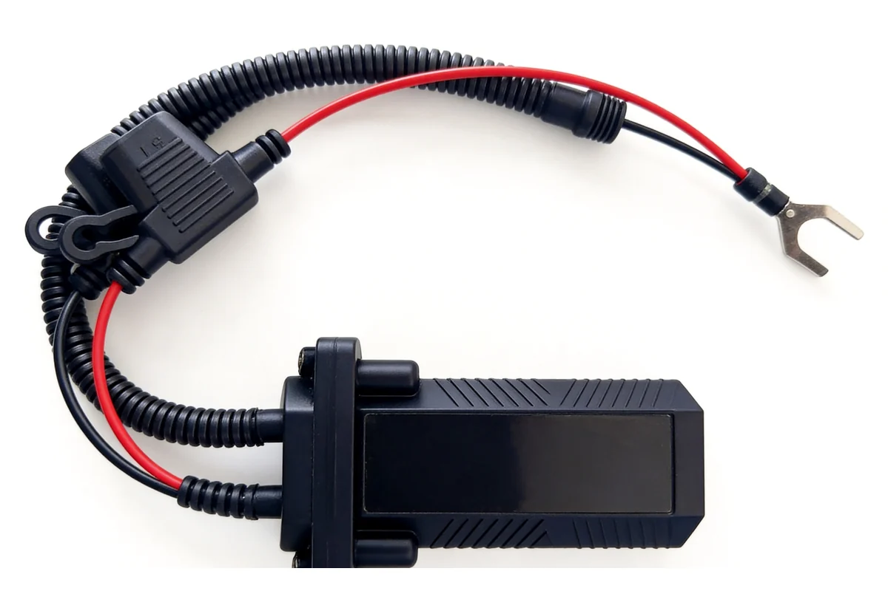
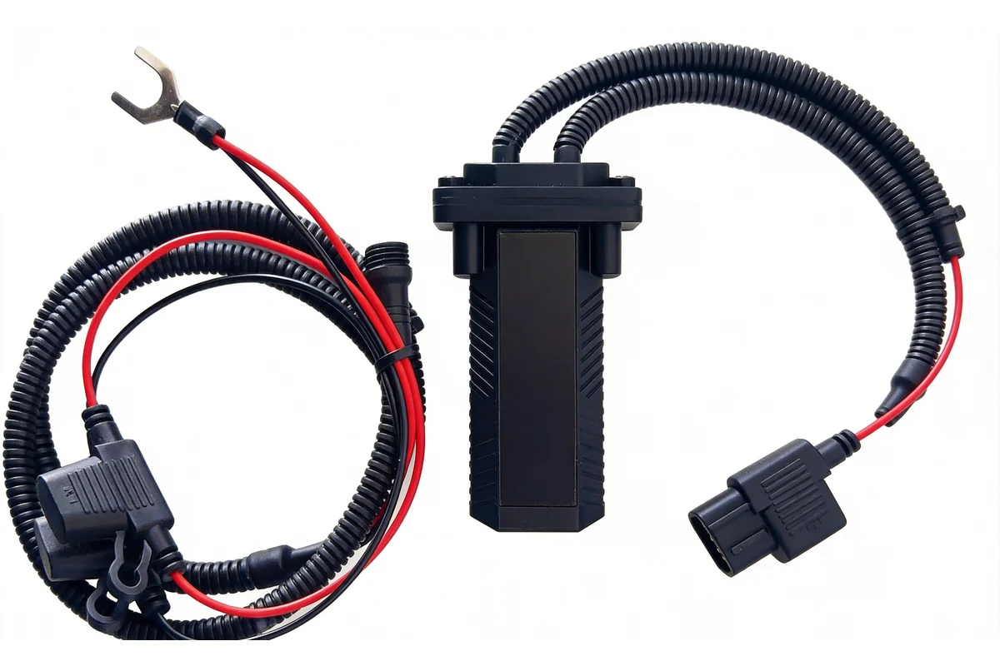
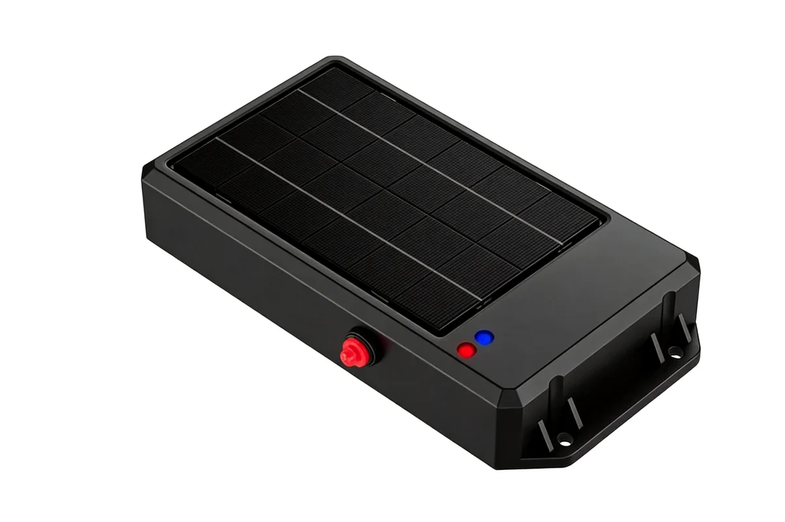

AXLTeco provides BDS/GPS dual-mode vehicle tracking terminals supporting 4G real-time data transmission, geo-fence alerts, 180-day history replay and fuel-monitoring linkage — for refined fleet management and safety monitoring of logistics fleets, construction machinery, official vehicles and ride-hailing.
BDS/GPS Dual-Mode Positioning
BDS+GPS dual-satellite positioning, accuracy <10m, cold start <30s, wide signal coverage.
4G Real-Time Transmission
4G Cat.1 all-network, second-level position reporting, remote commands and OTA upgrades.
Geo-Fence Alerts
Circular/polygon fences with real-time SMS/app/platform alerts on entry/exit — anti-theft.
180-Day Track Replay
Cloud storage of history tracks for 180 days, with speed/stop/mileage statistics and export.
ACC Status Detection
Real-time ignition/off monitoring, automatic drive/idle/park recognition for fuel optimization.
SOS Emergency Alarm
One-touch SOS reports position and calls preset contacts, protecting drivers and passengers.
Model Selection
Vehicle tracking terminals are organised by business function, each matching a different fleet-management goal and installation condition.
Tracking Terminals

Vehicle Tracking & Positioning
- Live positioning, track playback and status monitoring
- Live positioning with track playback

Vehicle Status & Fuel-path Detection
- Remote detection of speed, fuel path and cut-off anomalies
- Fuel-path anomalies and cut-off alerts

Communication & Data Backfill
- Data backfill in dead zones with live remote communication
- Data backfill for weak-coverage zones

Vessel & Outdoor Asset Positioning
- Positioning and geofence alerts for vessels, containers and outdoor assets
- Geofencing and alerts for outdoor assets
Quick Selection Guide
| Scenario | Equipment Category | Selection Focus |
|---|---|---|
| Live positioning, track playback and status monitoring | Vehicle Tracking & Positioning | Live positioning with track playback |
| Remote detection of speed, fuel path and cut-off anomalies | Vehicle Status & Fuel-path Detection | Fuel-path anomalies and cut-off alerts |
| Data backfill in dead zones with live remote communication | Communication & Data Backfill | Data backfill for weak-coverage zones |
| Positioning and geofence alerts for vessels, containers and outdoor assets | Vessel & Outdoor Asset Positioning | Geofencing and alerts for outdoor assets |
Interfaces & Compatibility
Vehicle GPS Tracking Sensor supports rich physical interfaces and network protocols, compatible with mainstream platforms and third-party systems.
Physical Interfaces
- Power input 9–36V
- RS-232 serial
- SIM slot
- SOS button
- Relay output
Communication Protocols
- TCP/IP
- UDP
- MQTT (optional)
- JT/T 808 (China standard)
- GB/T 32960
Compatible Platforms
- Vehicle management cloud
- Third-party TMS
- DingTalk / WeCom
- Government supervision platforms
Data Output
- Real-time position (per second)
- History tracks
- Geo-fence alerts
- Fuel/mileage reports
Application Solutions
Vehicle GPS Tracking Sensor can be deeply integrated with AXLTeco software systems and industry solutions to deliver synergistic value.
IBMS
Integrated building management platform for unified monitoring and control.
Core Value:
- System interconnectivity
- Reduced O&M costs
- Improved management
Dashboard System
Real-time data visualization with multi-source integration and custom reports.
Core Value:
- Clear data visibility
- Decision support
- Operational transparency
Smart Construction
Advantages & Guarantee
Compatible with Mainstream Brands
Equipment compatible with Hikvision, Dahua, ZKTeco and other mainstream brands, supporting ONVIF, GB/T 28181 and other standard protocols.
One-Stop Service
From solution design, equipment selection, installation and commissioning to after-sales maintenance, providing full-lifecycle one-stop service.
Local Support in Africa
Local service teams in Nigeria and other regions providing technical support, spare parts supply, and on-site maintenance.
Fast Response Maintenance
7x24 remote technical support, local engineers on-site within 48 hours for emergency failures.